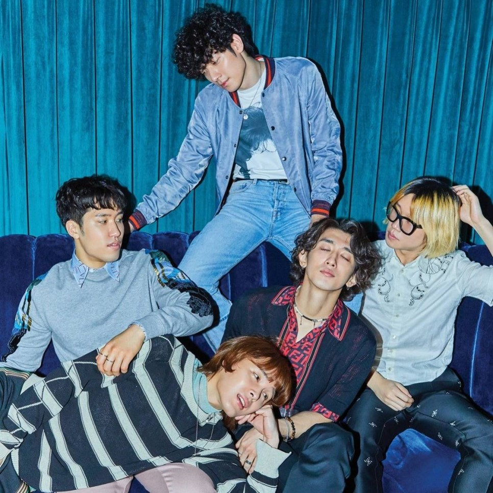

 잔나비는 최정훈, 김도형, 윤결, 장경준 4인조로 구성된 작사, 작곡, 편곡, 다양한 커버곡 등이 가능한 밴드이다. 잔나비라는 이름은 멤버들이 모두 원숭이띠라는 데서 착안해 붙였다.[1] 2019년 5월 24일, 유영현(키보드)은 고교시절 학교 폭력 가해자임이 알려지면서 그룹에서 탈퇴하였다.[2] 현재 멤버 윤결이 병역을 이행 중에 있다. (2019년 10월 10일 기준)
2019년 10월 Fender 오디오의 첫 공식 아티스트가 되었다. 2013 슈퍼스타K 시즌5에 참가 (TOP7(보컬-플랜비)진출) 2014 인천 펜타포트 락페스티벌 ‘펜타슈퍼루키’선정 2014 뉴이어월드 락페스티벌 with 뮤지션리거나잇 네이버뮤지션리거선정(1위) 2014 광주SBS K-pop콘서트 출연 2014 뉴이어월드 락페스티벌 공연 2015 KBS 올댓뮤직 출연 2015 KBS 슈퍼주니어의 키스더라디오 일요코너 ‘C디 3킨 O빠들’고정 게스트 2015 그린플러그드x뮤지션리그 ‘신인그린프렌즈’ 선발 2015 신한카드 Great Rookie Project 2015 오프닝 콘서트 공연 2015 그린플러그드 페스티벌 2015 청량리 롯데백화점 문화홀 ‘잔나비의 파라다이스’ 공연 2015 광주 유니버시아드 청년난장페스티벌 공연 (광주 MBC 주관) 2015 인천 펜타포트 락 페스티벌 2015 렛츠락 페스티벌 2015 춘천 KBS '올댓뮤직' 200회 특집 출연 2016 신한카드 Great Rookie Project 2016 공연 2016 인천 펜타포트 락 페스티벌 2016 렛츠락 페스티벌 2016 홍키라 '라온음감회' 3교대 게스트 2017 네이버 V앱 채널 신설 2017 유희열의 스케치북 출연 (170218) 2017 불후의 명곡 윤종신편 출연 (170318) 2017 아리랑TV 아임라이브 출연 (170407) 2017 문화콘서트 난장 담양대나무축제 (광주 MBC 주관) 2017 그린플러그드 서울 페스티벌 2017 KBS 올댓뮤직 출연 2017 불후의 명곡 박미경편 출연 (170610) 2017 불후의 명곡 노사연편 출연 (170617) 2017 SLOW 페스티벌 2017 지산 밸리록 페스티벌 2017 불후의 명곡 리차드막스편 출연 (170805) 2017 JUMF 전주 얼티밋뮤직 페스티벌 2017 유희열의 스케치북 출연 - 인디페스티벌 특집방송(170916) 2017 렛츠락 페스티벌 2017 상상실현 페스티벌 2017 그랜드 민트 페스티벌 2017 KBS 올댓뮤직 in 원주 (171130) 2017 아리랑TV 아임라이브 출연 (171229) 2018 tvN 드라마 스테이지 낫플레이드 카메오 출연 (180113) 2018 청춘 페스티벌 2018 그린플러그드 서울 페스티벌 2018 MBC 미스터리 음악쇼 복면가왕 - 생강이 있어 없어? 진저맨 <참가자> <최정훈> 2019 tvN 로맨스는 별책부록 특별 출연 2019 MBC 나혼자산다 최정훈 출연 2019 청춘페스티벌 서울 2019 동탄 오픈 더 콘서트 2019 그린플러그드 서울 페스티벌 2019 경주 한수원 아트 페스티벌 2019 레인보우 페스티벌 2019 철원 DMZ 피스트레인 페스티벌 2019 분당 파트 콘서트 2019 대구 어반 뮤직 페스티벌 2019 부산 락 페스티벌 단독 공연[편집] 130621 1st 단독공연 141107 2nd 단독공연 'November Rain' 150321 3rd 단독공연 '작전명 청춘' 150704 4th 단독공연 'Fire' 150725 'Thank you' Concert (4th 단독공연 'Fire' 앵콜) 151128 5th 단독공연 'Change' 160618 6th 단독공연 'Monkey Hotel' 161218 7th 단독공연 'JANNABI AND THE NEW WORLD' 170715-16 8th 단독공연 'Stop, look and listen' 171230-31 9th 단독공연 'Fantastic Old-Fashioned 송년회' 180602-03 10th 단독공연 '유희열 Curated 12 Group Sound 'JANNABI' 180826 11th 단독공연 '82.6% 잔나비 토크+콘서트<기다리는마음>' 181124-181125 12th 단독공연 'nonsense' 190316-190413 전국투어 콘서트 '투게더' 서울, 청주, 대구, 부산, 청주 190713-190714 현대카드 Cuated 57 잔나비'Fools on the Hill' 190831-190901 Fantastic old-fashioned ‘Returns!’